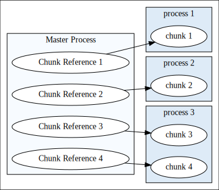

Large Scale R
Jason Cairns
The Problem
Larger-than-memory dataset
Novel model
Complex algorithm
Feature Requirements
Bonus: Fast, Interactive, Familiar
The Landscape
Spark
Heavyweight
Model definition
beyond the skills of most statisticians
pbdDMAT
Very familiar high-level interface
Built on MPI and ScaLAPACK for matrices
Dask
Mature System in Python
Executable pseudocode, not executable math
New Solution Dependencies
Supporting Concepts

Distributed object references chunks
Computation sent to the data
Supporting Program Layers
Model definition:
d(f)
Communication
The Solution
The Math
\[\begin{aligned} \dot{x} & = \sigma(y-x) \\ \dot{y} & = \rho x - y - xz \\ \dot{z} & = -\beta z + xy \end{aligned} \]
Sequential Code
Parallel Code
Sequential Code
Parallel Code
Sequential Code
Parallel Code
Sequential Code
Parallel Code
The Code in Action
More on concepts, implementation etc. if there is time
master, slave etc.
Close
Conclusion
Key Takeaway: There's a new system in R that gets to the essence of distributed modelling, with interfaces at multiple layers
Limitations:
Still in development
No monitoring or resilience
QR code to contact me